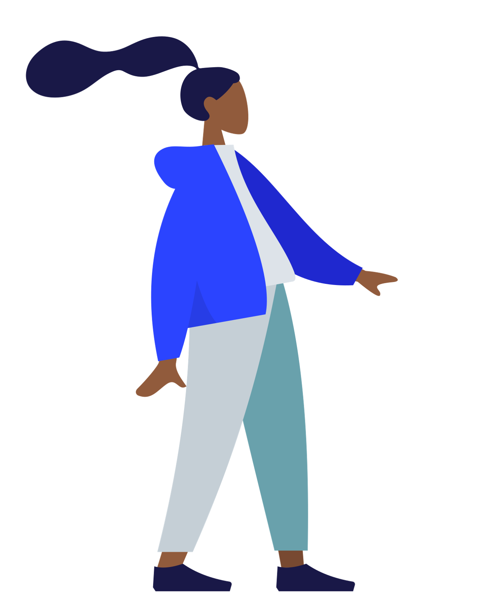

References / Illustration / 208
Humaaans illustration library (Pablo Stanley)
A free mix-and-match library of flat vector people by Pablo Stanley: interchangeable heads, tops, legs, and poses that anyone can assemble into scenes.
- Source
- Humaaans
- Creator
- Pablo Stanley
- Made
- 2018 (Commons gives 13 December 2018 for the uploaded parts)
- Style
- Corporate Memphis (agent-proposed, not yet reviewed by a person)
- Moods
- Friendly, casual, modular
- Evidence
- Inspected 1280 px renderings of
Humaaans-standing-1.svgandHumaaans-sitting-1.svgfrom Wikimedia Commons and stored the standing figure, flattened onto white. - Reviewed
- Rights
- Open license, stored. License: CC0-1.0. Rights policy
Context
The Humaaans site states: “Free for commercial or personal use. CC0 Public Domain License.” It describes customizable hair, tops, pants, poses, and scene templates for success states, error states, onboarding, and landing pages. Humaaans.
Wired (24 January 2021) quotes Pablo Stanley on his image banks of “flat, wacky SVGs” and his estimate that they were downloaded hundreds of thousands of times, and names such banks as a main cause of the style’s spread. Wired.
In August 2019 AIGA Eye on Design illustrated its article on the style with edited Humaaans figures, then licensed under CC BY 4.0. See Katharina Brenner’s illustration.
Observed
- A standing woman in profile, turned to the right, with a long ponytail drawn as a wavy navy shape.
- The head is a small, featureless oval; there are no eyes or mouth.
- She wears a bright blue jacket, a pale grey top, and trousers in two tones of grey-teal, one tone per leg.
- Hands are flat brown shapes with pointed fingers; shoes are dark navy blocks.
- Every shape is a flat fill with no outline. Shading is one darker tone of the same color on the far sleeve and leg.
- The seated figure uses the same system: a red jacket, blue trousers, and a pale grey ball as a seat.
Why it belongs
Humaaans turns the style into a kit. The parts join at fixed points, so any combination gives the same proportions, which is why the figures appear on so many unrelated products.
Borrow
Use one darker tone of the same hue for the far arm and leg instead of shading.
Keep faces blank or nearly blank so that pose and color carry the expression.
Measured
Machine-extracted by tools/image-traits.py on . Full measurement.
- Mean chroma
- 0.09
- Palette
- #ffffff 77%
- #2b44ff 6%
- #c5cfd6 5%
- #69a1ac 4%
- #191847 4%
- #1f28cf 2%
- #915b3c 1%
- #dce2e8 1%

